Witaj w świecie Mgły

Dead by Daylight to gra wieloosobowa typu survival horror, stworzona przez studio Behaviour Interactive. Premiera odbyła się w 2016 roku, a gra do dziś otrzymuje regularne aktualizacje.
Rozgrywka opiera się na zasadzie 4 kontra 1 — czterech Ocalonych próbuje uciec z planszy, naprawiając generatory, podczas gdy jeden Zabójca poluje na nich, aby złożyć ich w ofierze tajemniczej istocie zwanej Bytem.
Najważniejsze cechy gry
- Ponad 30 unikalnych zabójców z różnymi mocami
- Dziesiątki ocalonych z własnymi perkami
- Liczne mapy inspirowane horrorami
- Współpraca z markami jak Halloween, Resident Evil czy Silent Hill
Jak wygląda rozgrywka?
Każda runda zaczyna się od pojawienia się graczy na losowej mapie spowitej mgłą. Ocaleni muszą naprawić 5 z 7 generatorów, aby otworzyć bramy ucieczki. Zabójca stara się temu przeszkodzić, łapiąc graczy i wieszając ich na hakach.

Gra łączy napięcie, strategię i współpracę zespołową, co czyni ją jedną z najpopularniejszych gier z gatunku horroru.